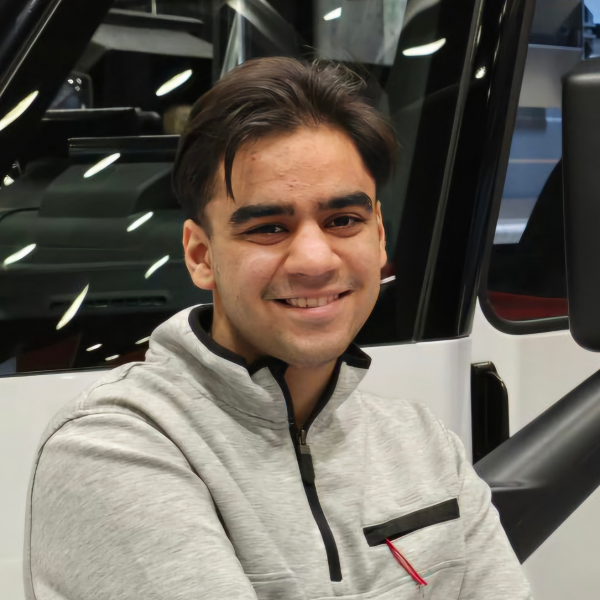
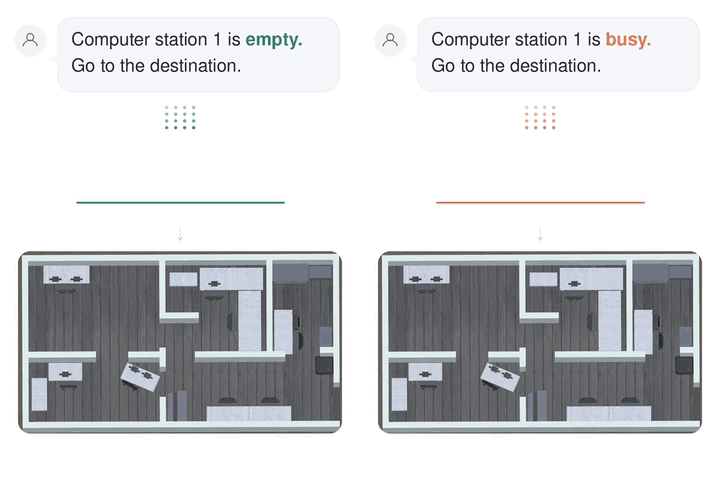
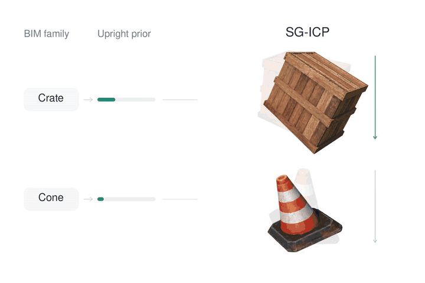
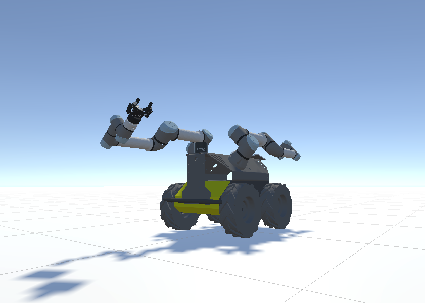
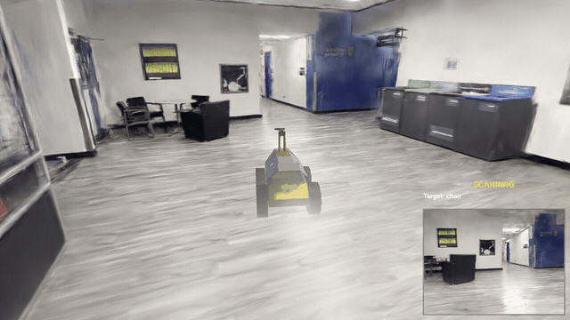
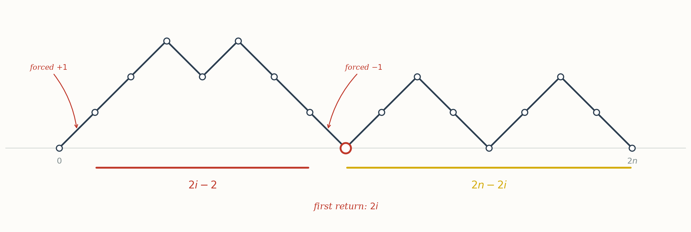

Behrad Beheshti
Applied Mathematics · San Diego State University
I am an undergraduate in Applied Mathematics at San Diego State University, with an emphasis in computer science. I work in the DiCE Lab, where I am advised by Reza Akhavian.
I am broadly interested in robotics and machine learning, particularly how robots can learn to perceive and interact with the world. My work spans active perception, language-informed navigation, and mobile manipulation.
Alongside robotics, I enjoy mathematics and writing about it . My paper on generating functions explores how algebra can help us solve counting problems.
Publications
Google Scholar

Semantic-Gravity Iterative Closest Point and AI-Assisted Navigation for Robot-Ready Construction Digital Twins
Automation in Construction, 2026
Research
NSF REU · Summer 2026
Learning to Coordinate Navigation and Gaze
WVU · UW–Madison · University of Cambridge
Learning where to move and look for object search with behavior cloning and RL.
My work: semantic priors, policy training, reward design, and evaluation.
Showing: Multiroom search
Open full videos

Projects

Active Perception in Gaussian-Splat Environments
2nd place of 17 teams · 2026 ASCE Computing Division Datathon
A simulated Husky searches a Gaussian-splat room for a natural-language target. The input frames included moving people, which we removed from the reconstructed scene.
My work: base–camera coordination and detection logic.

Expository paper · Spring 2026
Generating Functions as a Counting Tool
An expository paper on recurrences, partitions, Catalan numbers, and exponential generating functions, with derivations and examples.
Mentorship
Undergraduate Research Peer Mentor · SDSU
I help fellow undergraduates get started in research and work through project questions, including students in SDSU’s Undergraduate Research, Scholarship and Creative Activities Program (SURP).
Previously, I tutored high school students in mathematics and physics through Pathways Service Learning.
Experience & background
Research experience
DiCE Lab
Undergraduate Research Assistant · SDSU
NSF Research Experiences for Undergraduates
WVU · UW–Madison · University of Cambridge
Disease Modeling Lab
Undergraduate Research Assistant · SDSU
Get in touch
For questions about my work or getting started in research, feel free to reach out.